9 Molekylära maskiner – nanovärlden
En vilande människa omvandlar energi ungefär lika snabbt som en gammaldags glödlampa på 100 watt lyser. Energin kommer från maten, och den används till allt vi gör: till att hålla kroppen varm, till att tänka, till att andas och till att röra oss. Men hur går det till? Det är inte så att maten brinner i kroppen som ved i en kamin. I stället omvandlas energin i många små steg, och de som utför stegen är molekylära maskiner: proteiner som är några miljondels millimeter stora men som fungerar som motorer, pumpar och generatorer.
I Kapitel 2 såg vi i stora drag hur energin i maten till slut hamnar i ATP, cellens energivaluta. Där mötte vi andningskedjan, protongradienten och ATP-syntas. I det här kapitlet går vi ett steg djupare. Vi ska se hur den roterande motorn ATP-syntas är byggd, hur man kunde visa att den verkligen roterar, och hur en liknande motor driver bakteriernas propeller. Vi ska också följa den långa historien om hur vi förstod vad andning är, och avsluta med bakterier som lever djupt nere i berggrunden och “andas” mineraler.
9.1 Energi i små portioner
Innan vi ser på maskinerna behöver vi veta hur mycket energi det handlar om, och i vilken form cellerna tar emot den.
Stora djur gör av med mer energi än små, men inte i proportion till vikten. Om man ritar upp hur mycket energi olika djur omsätter i vila mot hur mycket de väger, från mus till elefant, följer djuren ett och samma enkla samband. Grovt räknat gör ett djur som väger tio gånger mer av med knappt sex gånger mer energi, inte tio gånger mer. En elefant väger hundratusentals gånger mer än en mus, men omsätter per kilo kroppsvikt mycket mindre energi. Sambandet kallas Kleibers lag, efter den schweizisk-amerikanske djurfysiologen Max Kleiber som beskrev det på 1930-talet. En vuxen människa hamnar på ungefär 100 watt.
All denna energi måste levereras till cellerna i en form som de kan använda. Som vi såg i Kapitel 2 är den formen framför allt ATP. ATP levererar energi i små portioner: varje gång en fosfatgrupp spjälkas av och ATP blir ADP frigörs en liten mängd energi, som kan driva en muskelsammandragning, en nervimpuls eller en pump i membranet.
Därefter måste ADP laddas upp till ATP igen. Kroppen innehåller bara en liten mängd ATP åt gången, och därför måste varje molekyl laddas om hundratals gånger per dygn. Räknat i vikt omsätter en människa i storleksordningen sin egen kroppsvikt i ATP varje dygn, och med hårt arbete ännu mer.
Mitokondriernas membran
Var laddas då ADP upp till ATP? Det mesta av vårt ATP tillverkas i mitokondrierna, cellens kraftverk. Hos växter tillverkas också mycket ATP i kloroplasterna, med energi från solljus (Kapitel 10). En mitokondrie har två membran. Det inre membranet är kraftigt veckat, och det är där ATP tillverkas. Om man lade ut det inre membranet från alla mitokondrier i en människa skulle det täcka flera tusen kvadratmeter, ungefär som en fotbollsplan eller mer.
Själva membranet är mycket tunt, ungefär 5 nanometer (5 miljondels millimeter). Det består av ett dubbelt lager av fosfolipider, med vattenälskande huvuden mot vattnet på båda sidor och fettsyrekedjor i mitten (Kapitel 7).
Det som gör membranet till en del av ATP-fabriken är att det är laddat, ungefär som ett batteri. I ett levande membran är utsidan positiv och insidan negativ, eftersom det finns fler protoner (vätejoner, H+) på utsidan. Hur de hamnar där ser vi längre fram i kapitlet. Protonerna “vill” tillbaka in, men membranet släpper inte igenom dem. Den viktigaste vägen tillbaka går genom enzymet ATP-syntas, och när protonerna strömmar genom det tillverkas ATP. Det är en elektrisk ström, men av protoner i stället för av elektroner.
9.2 ATP-syntas: en roterande motor
Hur kan en ström av protoner tillverka ATP? För att förstå det måste vi först se hur enzymet är byggt.
ATP-syntas består av två huvuddelar (Figur 9.1). Den ena sitter i membranet och den andra sticker ut som ett stort huvud på mitokondriens insida. Delarna kallas Fo och F1 i facklitteraturen, men vi kan tänka på dem som en motor och en fabrik.
- Rotorn sitter i membranet. Den är en ring av 8–17 likadana små proteinkedjor, så kallade c-delar, beroende på organism.
- Axeln sitter fast i ringen och sticker upp i huvudet. När ringen snurrar, snurrar axeln med.
- Huvudet består av sex delar i en krans, tre av ett slag (α, alfa) och tre av ett annat (β, beta), som omväxlande sitter runt axeln. I de tre β-delarna tillverkas ATP.
- Statorn är en lång arm på sidan, som håller fast huvudet så att det inte snurrar med axeln. Den är förankrad i en del av membrandelen som kallas a-delen och som sitter tätt intill ringen.
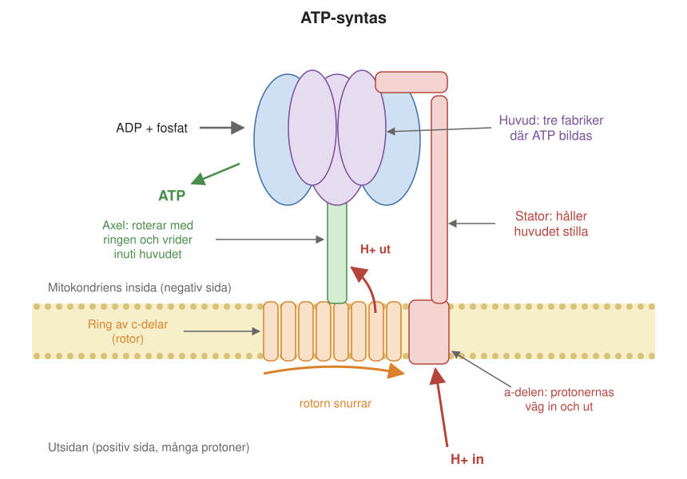
Hur protonerna får ringen att snurra
Det första steget är att protonströmmen sätter ringen i rörelse. Protonerna kan inte gå rakt igenom ATP-syntas. I a-delen finns två halva kanaler, som inte står i förbindelse med varandra. Den ena leder från membranets utsida in till ringen, den andra leder från ringen ut till insidan. En proton som kommer in genom den första halvkanalen sätter sig på en c-del i ringen. Då kan ringen vrida sig ett steg, och protonen följer med ringen nästan ett helt varv. När den kommer fram till den andra halvkanalen släpper den och går ut på insidan.
Varje proton som passerar flyttar ringen ett steg framåt. Riktningen bestäms av att det finns många protoner på utsidan och få på insidan, och av att insidan är negativt laddad. Det är som en vattenkvarn: vattnet rinner bara åt ett håll, och därför snurrar hjulet bara åt ett håll.
Hur rotationen blir till ATP
Nästa steg är att omvandla ringens rörelse till ATP. Det sker i huvudet, med hjälp av axeln. Axeln är sned och osymmetrisk. När den roterar inne i huvudet trycker den i tur och ordning på de tre β-delarna och ändrar deras form. Varje β-del går därför igenom tre lägen under ett varv:
- Öppen: en molekyl ADP och en fosfatgrupp kan binda in.
- Halvsluten: ADP och fosfat hålls fast.
- Sluten: ADP och fosfat pressas ihop så hårt att de bildar ATP.
När axeln har vridit sig vidare öppnas β-delen igen och det färdiga ATP:t släpper. Eftersom de tre β-delarna alltid befinner sig i olika lägen bildas tre ATP per varv.
Det överraskande är att det inte är själva hopkopplingen av ADP och fosfat som kräver mest energi. Det som kräver energi är att få det färdiga ATP:t att släppa från enzymet, och det är det som rotationen sköter. Denna förklaring kallas bindningsbytesmodellen (eng. binding change mechanism) och föreslogs av den amerikanske biokemisten Paul Boyer.
Modellen bekräftades 1994, då John Walkers forskargrupp i Cambridge kunde bestämma den tredimensionella strukturen hos huvudet med hjälp av röntgenkristallografi (Kapitel 6). Strukturen visade att de tre β-delarna verkligen hade olika form. Boyer och Walker fick Nobelpriset i kemi 1997, tillsammans med dansken Jens Christian Skou, som hade upptäckt natrium-kaliumpumpen (Kapitel 2).
Hur vet man att ATP-syntas roterar?
Att ett enzym skulle snurra som en motor var en djärv idé, och många var skeptiska. Beviset kom 1997 från en japansk forskargrupp med Hiroyuki Noji, Masasuke Yoshida och Kazuhiko Kinosita. De gjorde ett experiment som är lika enkelt i princip som det var svårt i praktiken (Figur 9.2).
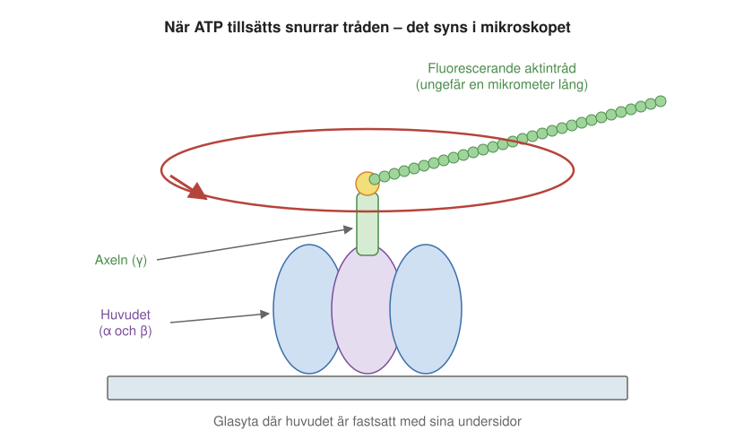
Experimentet utnyttjar att maskinen kan gå baklänges. När det finns ATP men ingen protongradient, bryter huvudet ned ATP till ADP och fosfat, och då vrids axeln åt andra hållet. Huvudet blir en motor som drivs av ATP. Om axeln verkligen roterar, borde den alltså snurra när man tillsätter ATP. Frågan var hur man skulle kunna se det.
Forskarna tog enbart huvudet av ATP-syntas, utan membrandelen, och fäste det upp och ned på en glasskiva. På axeln, som då pekade uppåt, fäste de en lång tråd av proteinet aktin, cirka en mikrometer lång, märkt med ett fluorescerande ämne som lyser i ett ljusmikroskop. Själva enzymet är för litet för att synas, men tråden kan man se. Sedan tillsatte de ATP. I mikroskopet såg man då hur tråden började snurra runt, som visaren på en klocka, och alltid åt samma håll.
Senare mätningar visade att axeln roterar i steg om en tredjedels varv, ett steg för varje ATP som spjälkas, precis som bindningsbytesmodellen förutsade. Mätningarna visade också att motorn är mycket effektiv: nästan all energi i ATP omvandlas till rörelse.
Återstod att visa det omvända: att rotationen kan driva ATP-tillverkningen. År 2004 gjordes experimentet åt andra hållet. Hiroyasu Itoh och hans kolleger, i samma japanska forskarmiljö, fäste en liten magnetisk kula på axeln och vred den med hjälp av magneter (Figur 9.3). När axeln tvingades runt åt rätt håll tillverkade huvudet ATP, utan någon protongradient alls. Rotationen är alltså inte bara en följd av ATP-tillverkningen, den är själva drivkraften.
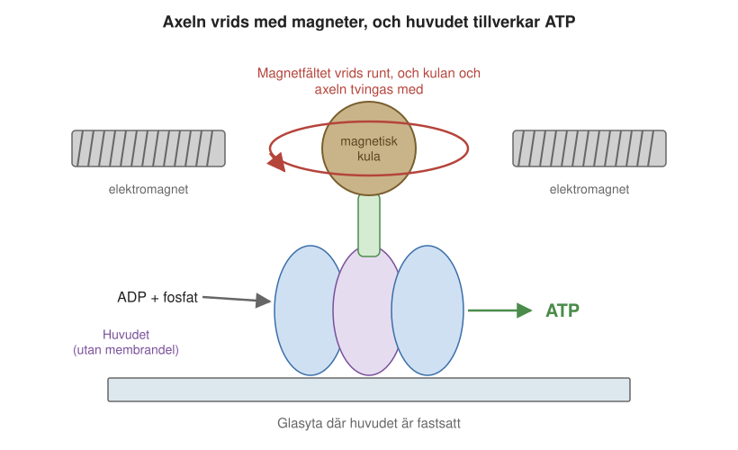
En motor med växel
ATP-syntas är inte byggt likadant i alla organismer, och skillnaden avgör hur mycket ATP varje proton ger. Varje helt varv av axeln ger tre ATP, eftersom huvudet har tre fabriker. Men hur många protoner som behövs för ett varv beror på hur många c-delar ringen har. Varje c-del tar emot en proton per varv. I mitokondrierna hos nötkreatur, och troligen hos alla ryggradsdjur, har ringen 8 c-delar. I jäst har den 10, och i växternas kloroplaster 14 (Figur 9.4).
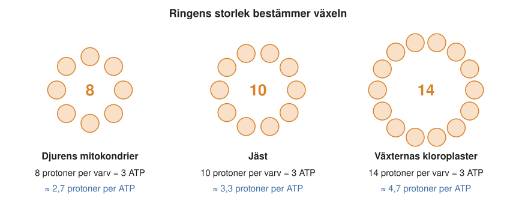
Ringens storlek är alltså en sorts växel, som på en cykel. Med en liten ring behövs bara knappt tre protoner för varje ATP (åtta protoner för tre ATP), vilket ger mycket ATP för protongradienten. Med en stor ring behövs fler protoner. Å andra sidan delas då arbetet med att tillverka ett ATP på fler protoner, så varje proton behöver bidra med mindre energi. Därför räcker det med en lägre spänning över membranet för att driva motorn. Olika organismer har anpassat växeln efter sina förhållanden. Det är fortfarande en öppen fråga om någon organism kan byta växel, alltså bygga ringar av olika storlek beroende på förhållandena.
9.3 Bakteriernas propeller
ATP-syntas är inte den enda roterande motorn i naturen. Många bakterier simmar med hjälp av långa, skruvformade trådar, flageller. Längst in, där flagellen sitter fast i bakteriens hölje, finns en motor som får tråden att rotera, som en båtpropeller (Figur 9.5).
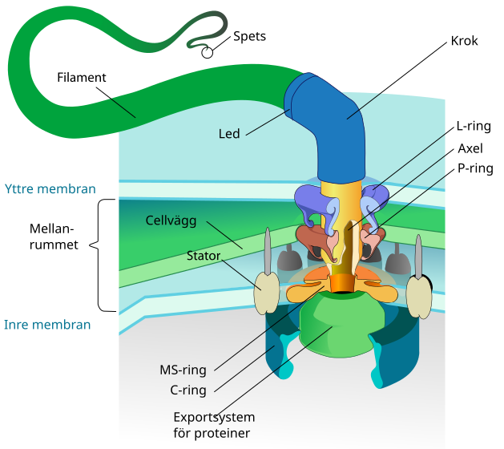
Flagellmotorn liknar ATP-syntas i det att den drivs av protoner som strömmar in genom membranet (hos vissa bakterier används i stället natriumjoner). Protonerna går genom statorerna, proteiner som sitter runt motorns rotor, och för varje proton som passerar knuffas rotorn ett litet steg. Motorn kan snurra flera hundra varv per sekund.
Flagellmotorn kan också byta riktning, och det är så bakterien styr. När alla flageller hos E. coli snurrar åt ena hållet bildar de ett gemensamt knippe och bakterien simmar rakt fram. När motorerna byter riktning glider knippet isär och bakterien snurrar runt på stället, för att sedan simma iväg åt ett nytt håll. Genom att byta riktning oftare eller mer sällan kan bakterien söka sig mot näring och bort från gifter.
Flagellmotorn är ett av de mest imponerande exemplen på nanoteknik i naturen. Den består av omkring tjugo olika sorters proteiner, flera av dem i många kopior, som sätter ihop sig själva till en färdig motor med rotor, stator, lager och en drivaxel genom cellväggen.
9.4 Hur laddas membranet?
Vi har sett hur protonströmmen genom membranet driver ATP-syntas. Men varifrån kommer energin som laddar membranet? Hos djur kommer den från maten och hos växter från ljuset. I våra celler är det andningen som tar energin ur maten och laddar membranet. Men att andning över huvud taget har med förbränning att göra var länge okänt. Innan vi ser hur laddningen går till ska vi därför göra en historisk utflykt, för att se hur människan kom fram till att andning och förbränning är samma sak.
Från flogiston till syre
På 1700-talet förklarades förbränning med flogistonteorin. Enligt den innehöll allt som kan brinna ett osynligt “eldämne”, flogiston, som frigjordes när ämnet brann. När allt flogiston hade gått ut i luften slocknade elden. Teorin förklarade mycket, men inte allt. När metaller upphettas i luft bildas en oxid, ett slags rost, och oxiden väger mer än metallen gjorde från början. Skulle flogiston då ha negativ vikt?
Svaret kom från flera håll under 1770-talet. Den svenske apotekaren Carl Wilhelm Scheele visade att luften är en blandning av två gaser: en som underhåller förbränning, som han kallade “eldluft”, och en som inte gör det. Engelsmannen Joseph Priestley upphettade 1774 kvicksilveroxid med solljus genom ett brännglas och fick fram en gas som fick en låga att brinna starkt och som höll en mus vid liv mycket längre än vanlig luft. Båda hade upptäckt syre.
Det var fransmannen Antoine Lavoisier som förstod vad upptäckterna betydde. Han visade med noggranna vägningar att metaller, svavel och fosfor blir tyngre när de brinner, eftersom de tar upp en del av luften, och att ingen massa försvinner om man också väger gaserna. (Ved och stearinljus blir lättare, men bara för att det som bildas försvinner ut i luften som gas.) Den del av luften som tas upp kallade han oxygène, “syrabildare”, eftersom han trodde att alla syror innehöll den (det visade sig senare vara fel). Några år före Priestley hade Henry Cavendish framställt en lättantändlig gas. Lavoisier gav den namnet hydrogène, “vattenbildare”, eftersom den bildar vatten när den brinner. Det är den gas vi i dag kallar väte. Med Lavoisiers förklaring behövdes inget flogiston, och därmed var flogistonteorin död.
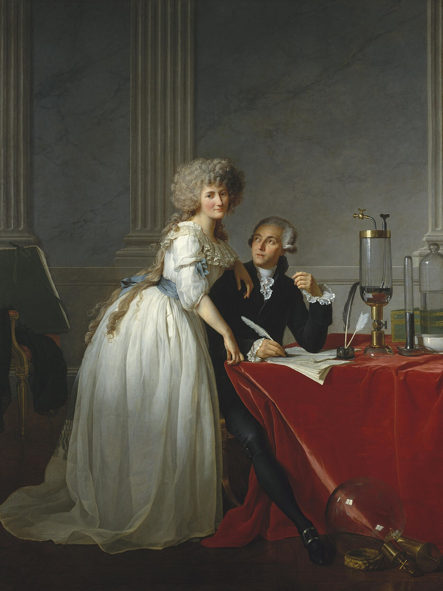
Andning är långsam förbränning
Om ett brinnande ämne tar upp syre och avger värme, gör då ett djur samma sak när det andas? Lavoisier tog också det steget. Tillsammans med matematikern Pierre-Simon Laplace byggde han omkring 1780 en iskalorimeter: en behållare omgiven av is, där man kunde mäta hur mycket värme något avgav genom att väga smältvattnet. I kalorimetern placerade de ett marsvin och mätte hur mycket is som smälte och hur mycket koldioxid djuret andades ut. Sedan jämförde de med hur mycket värme som bildades när man brände kol till samma mängd koldioxid. Mängderna stämde ganska väl överens. Det var den första mätningen av ett djurs ämnesomsättning, samma storhet som Kleibers lag i början av kapitlet handlar om.
Slutsatsen var att andning är förbränning: syre förbrukas, koldioxid och vatten bildas och värme frigörs, precis som när ett ljus brinner. Den stora skillnaden är att förbränningen i kroppen sker långsamt och kontrollerat, i många små steg.
Lavoisier fick inte se hur hans idéer utvecklades. Han hade också varit skatteindrivare åt kungen, och under den franska revolutionen avrättades han i giljotinen 1794.
Cytokromer och andningsenzymet
Under 1800-talet förstod man att förbränningen sker i kroppens celler, inte i lungorna. Men vilka molekyler utförde den? Ett viktigt steg togs 1925 av David Keilin, en forskare i Cambridge. Med ett mikroskop kopplat till ett spektroskop, ett instrument som delar upp ljus i dess färger, tittade han på ljus som gått genom muskler från insekter. Han såg mörka band i spektrumet, där vissa färger absorberades. Banden ändrades när musklerna fick syre och när de saknade syre. Keilin kallade de färgade ämnena som gav banden cytokromer, “cellfärger”. Samma band hade redan på 1880-talet setts av läkaren Charles MacMunn, men hans resultat hade avfärdats och fallit i glömska. Keilin var den som visade att cytokromerna tar del i andningen. De innehåller hem, samma järnhaltiga grupp som ger blodet dess röda färg i hemoglobin.
Men vilket av andningens enzymer är det som till sist tar emot syret? Ungefär samtidigt arbetade tysken Otto Warburg i Berlin med den frågan (Figur 9.7). Han utnyttjade att kolmonoxid hämmar andningen genom att binda till detta “andningsenzym”, och att bindningen bryts av ljus. Genom att mäta vilka färger på ljuset som bäst häver hämningen kunde han bestämma andningsenzymets färgspektrum, utan att någonsin ha sett enzymet. Spektrumet liknade hemoglobinets. Warburg drog 1928 slutsatsen att andningsenzymet innehåller järn bundet i en hemgrupp, och han fick Nobelpriset i fysiologi eller medicin 1931. Det enzym han hade studerat kallas i dag cytokrom c-oxidas, och vi ska se närmare på det i Kapitel 10.
Warburg var en av sin tids mest framgångsrika forskare, och det märktes när han sökte pengar. En av hans ansökningar om forskningspengar finns bevarad. Den består av en enda mening: “Jag behöver 10 000 mark.” Han fick hela summan, som var mycket pengar på den tiden.
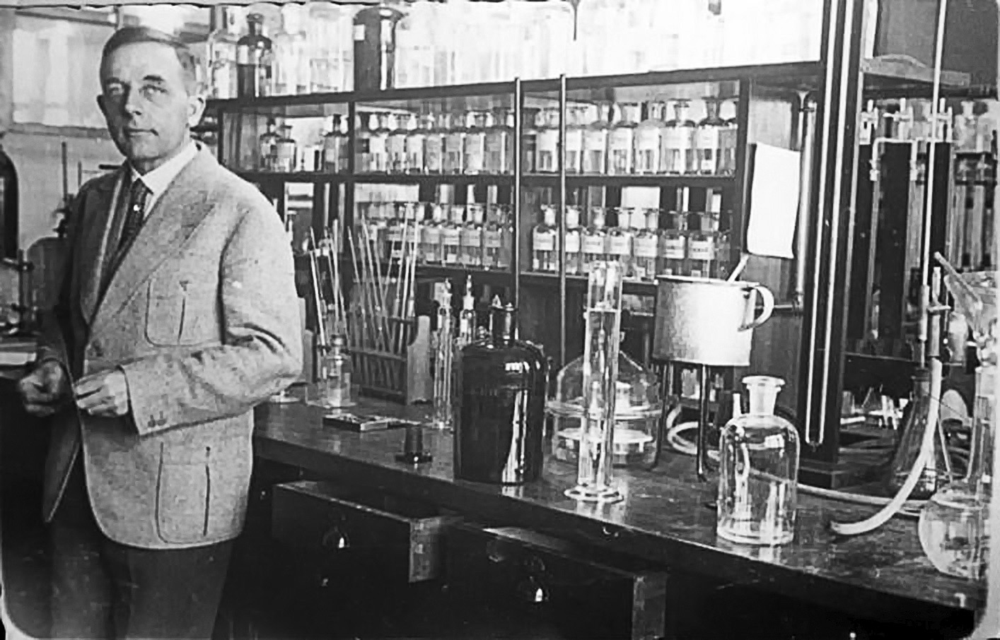
9.5 Andningskedjan och Mitchells idé
Med cytokromerna och andningsenzymet var några av andningens molekyler kända. Nu kan vi återvända till frågan hur membranet laddas, och följa energin från maten hela vägen fram. Som vi såg i Kapitel 2 bryts kolhydrater ned till glukos, fett till fettsyror och glycerol och proteiner till aminosyror. Alla dessa bryts sedan vidare ned, och energin samlas upp av elektronbäraren NADH. NADH lämnar sina elektroner till andningskedjan i mitokondriens inre membran.
Andningskedjan består av fyra stora proteinkomplex, som numreras I–IV, och två små rörliga bärare (Figur 9.8). Komplex I tar emot elektronerna från NADH. Den lilla fettlösliga molekylen ubikinon (koenzym Q10) bär dem vidare inne i membranet till komplex III. Därifrån tar det lilla proteinet cytokrom c över och bär elektronerna längs membranets utsida till komplex IV, cytokrom c-oxidas, där de till sist lämnas till syre som bildar vatten. Komplex II är en alternativ ingång för elektroner från citronsyracykeln. Tre av komplexen, I, III och IV, använder energin från elektronerna till att pumpa protoner ut genom membranet.
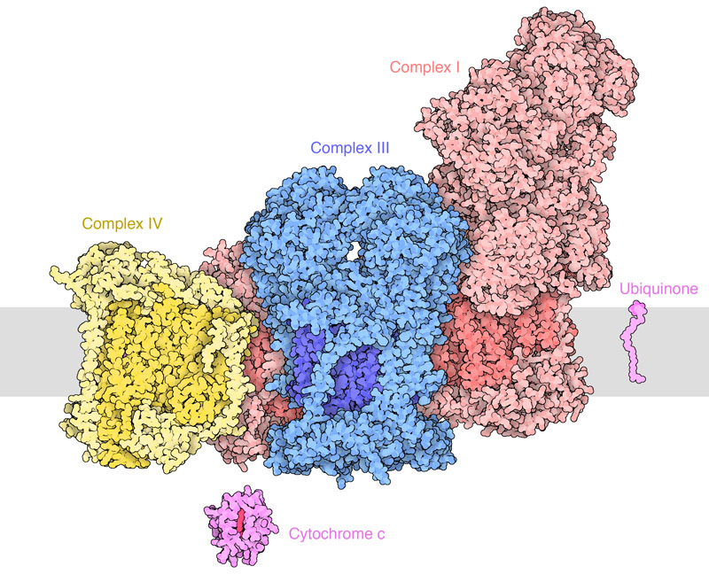
Före Mitchell
Hur andningskedjan och ATP-tillverkningen hänger ihop kan i dag verka självklart, men det tog lång tid att förstå. I början av 1960-talet visste man att andningen i mitokondrierna på något sätt var kopplad till ATP-tillverkningen: om andningen stannade upphörde också ATP-tillverkningen. Men hur kopplingen gick till var en gåta. De flesta biokemister tänkte sig att det fanns en energirik mellanprodukt, en molekyl som bildades när elektronerna passerade andningskedjan och som sedan kunde ge sin energi till ADP så att ATP bildades. Det fanns redan sådana exempel i nedbrytningen av socker. Under många år letade forskare intensivt efter mellanprodukten, men den gick inte att hitta.
Mitchells kemiosmotiska teori
Den engelske biokemisten Peter Mitchell föreslog 1961 en helt annan förklaring. Det fanns ingen mellanprodukt, menade han. I stället pumpar andningskedjan ut protoner över membranet, så att membranet laddas upp. Det är spänningen och skillnaden i protonhalt över membranet som driver ATP-tillverkningen. Kopplingen sker alltså inte genom en molekyl utan genom membranet självt. Teorin kallas den kemiosmotiska teorin.
Mitchell jämförde det hela med en elektrisk krets (Figur 9.9). Andningskedjan är batteriet, som driver en ström av protoner ut genom membranet. ATP-syntas är lampan, som gör arbete när strömmen går tillbaka. Precis som i en elektrisk krets måste kretsen vara sluten och membranet tätt. Ett hål i membranet är en kortslutning: protonerna rusar tillbaka utan att något ATP bildas, och energin blir värme. Det är precis vad som händer i det bruna fettet, där proteinet termogenin fungerar som en avsiktlig kortslutning (Avsnitt 2.9.3).
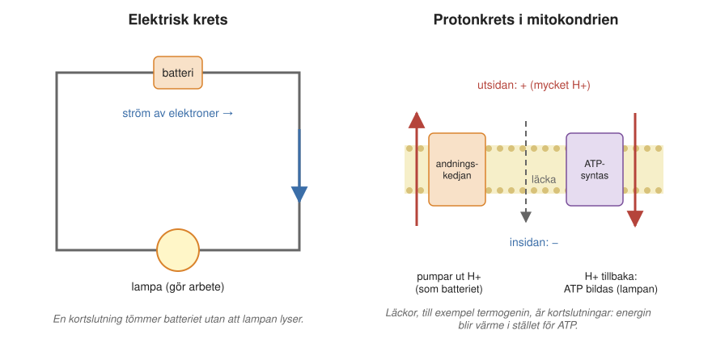
Idén mötte hårt motstånd. Mitchell var en egensinnig forskare som av hälsoskäl hade lämnat universitetet i Edinburgh. Han köpte och rustade upp en förfallen herrgård, Glynn House i Cornwall i sydvästra England, och startade där ett eget litet forskningsinstitut. Där fortsatte han under många år att med experiment försvara sin teori. Efter hand visade det sig att Mitchell hade rätt, och han fick Nobelpriset i kemi 1978 (Figur 9.10). I dag är den kemiosmotiska teorin en hörnsten i biokemin. Samma princip används i mitokondrier, i kloroplaster och i bakterier.
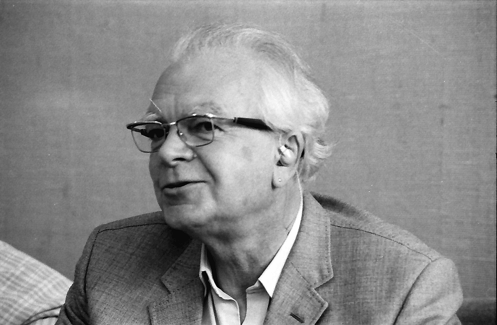
Ett membran under hög spänning
Mitchells teori bygger på att membranet kan hålla en spänning utan att läcka. Hur stor är då den spänningen? Över mitokondriens inre membran är den omkring 0,15–0,2 volt. Det låter inte mycket, jämfört med de 1,5 volt som ett vanligt batteri ger. Men membranet är bara 5 nanometer tjockt. Om man räknar ut hur stark den elektriska fältstyrkan blir, alltså spänningen delad med avståndet, blir det omkring 300 000–400 000 volt per centimeter. Det är omkring tio gånger mer än vad som behövs för att luft ska slå igenom med en gnista, som vid ett blixtnedslag. Ett biologiskt membran är alltså en utomordentlig isolator.
Att membranet är så tunt har en till fördel. Ett membran med laddningar på båda sidor fungerar som en kondensator, en anordning som lagrar elektrisk energi. Ju tunnare skiktet mellan laddningarna är, desto mer laddning och energi kan lagras vid en viss spänning. Det tunna mitokondriemembranet, med sin enorma yta, är därför ett utmärkt energilager.
9.6 En trappa för elektroner
Vi har sett att elektronerna från NADH driver protonpumparna. Men varför går elektronerna från NADH till syre, och inte tvärtom? Svaret är att olika molekyler håller olika hårt i sina elektroner. NADH håller dåligt i sina, medan syre drar mycket starkt i elektroner. Man kan mäta hur starkt ett ämne drar i elektroner som en elektrisk spänning, ämnets redoxpotential, i volt. Ett ämne med låg (negativ) redoxpotential ger gärna bort elektroner, ett ämne med hög (positiv) tar gärna emot dem.
För NADH är redoxpotentialen ungefär −0,3 volt, för syre som bildar vatten ungefär +0,8 volt. Skillnaden, drygt en volt, är ett mått på hur mycket energi som står till förfogande, ungefär som höjdskillnaden för vatten som rinner nedför en trappa. Elektronerna faller därför “nedför” från NADH till syre (Figur 9.11). Andningskedjans komplex är trappstegen. Vid varje steg tas en del av energin tillvara och används för att pumpa protoner. Om elektronerna i stället föll hela vägen i ett enda steg skulle all energi bli värme, som när man bränner socker i en låga.
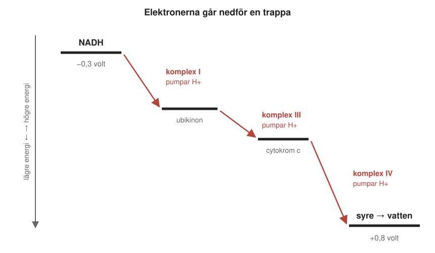
Trappan förklarar också varför vi behöver andas. Syre är den bästa elektronmottagare som finns i stor mängd på jorden, och därför ger andning med syre mycket energi. Utan syre stannar trappan, och då stannar också protonpumparna och ATP-syntas.
9.7 Liv utan syre
Men syre är inte den enda möjliga elektronmottagaren, och NADH är inte den enda möjliga elektronkällan. Många mikroorganismer lever på helt andra kombinationer. Principen är densamma: elektroner får falla från ett ämne som håller dåligt i dem till ett ämne som drar hårdare, och energin används till att pumpa protoner och tillverka ATP.
Ett exempel är vätgas. Väte håller ännu sämre i sina elektroner än NADH, med en redoxpotential på ungefär −0,4 volt. Vissa bakterier, acetogener, lever på att föra elektroner från vätgas till koldioxid, som då blir ättiksyra. Vissa arkéer, metanogener, gör i stället koldioxid och vätgas till metan och vatten. Det är dessa organismer som bildar metan i sumpmarker, i risfält och i magen på kor. Energiskillnaden i deras trappa är mycket mindre än mellan NADH och syre, så de lever på en snålare energibudget. I gengäld behöver de varken syre eller ljus.
Liv i underjorden
Därför kan sådana organismer leva på platser där man länge trodde att inget liv fanns. Bakterien Bacillus infernus, “bakterien från underjorden”, beskrevs 1995 efter att ha hittats i borrprover från 2,7 kilometers djup i USA. Där är det omkring 60 grader varmt och helt syrefritt. I Sverige har man hittat värmeälskande bakterier i vatten från omkring 3,5 kilometers djup i ett borrhål i graniten vid Siljan, även om det har diskuterats om en del av dem kan ha kommit ned med borrningen. Sådana fynd tyder på att det finns en stor och okänd biosfär djupt nere i jordskorpan, där mikroorganismer lever långsamt på vätgas och mineraler.
Bakterier som andas sten
Elektronmottagaren behöver inte ens vara löst i vatten. Ett av de märkligaste exemplen är bakterien Shewanella oneidensis. Den kan använda fasta mineraler, till exempel järnoxider (en sorts rost), som elektronmottagare i stället för syre. Problemet är att mineralerna inte löser sig i vatten och därför inte kan tas in i cellen. Shewanella löser det genom att skicka ut elektronerna genom sitt hölje.
I bakteriens membran sitter kedjor av proteiner, cytokromer med många hemgrupper, som tillsammans bildar en ledning från insidan till utsidan. Elektronerna hoppar från järnatom till järnatom i hemgrupperna, genom det inre membranet, mellanrummet och det yttre membranet, och lämnas till sist till mineralet utanför. Bakterien kan också bilda långa utskott, så kallade nanotrådar, som kan leda elektroner längre sträckor. År 2014 visade en amerikansk forskargrupp att nanotrådarna är utskott av bakteriens yttre membran, fyllda med sådana cytokromer.
Sådana bakterier är viktiga på flera sätt. Bakterier som andas mineraler påverkar vilka mineraler som bildas och löses upp i jordskorpan. Livet har alltså satt sin prägel på planetens geologi, och det är en av anledningarna till att forskare som letar efter liv på andra himlakroppar, astrobiologer, intresserar sig för dem. Bakterier som lämnar elektroner till fasta material kan också användas i så kallade mikrobiella bränsleceller, där bakterierna lämnar elektroner direkt till en elektrod och alstrar en svag elektrisk ström.
9.8 Sammanfattning
- En vuxen människa omsätter energi med en effekt på ungefär 100 watt. Energin levereras till cellerna i små portioner, som ATP, och varje ATP-molekyl laddas om hundratals gånger per dygn.
- Mitokondriens inre membran är laddat som ett batteri, med fler protoner på utsidan. Spänningen är omkring 0,15–0,2 volt över ett membran som bara är 5 nanometer tjockt.
- ATP-syntas är en roterande motor. Protoner som strömmar genom membrandelen får en ring och en axel att rotera, och axeln tvingar fram formförändringar i huvudet så att tre ATP bildas per varv. Ringens storlek är en växel som bestämmer hur många protoner som går åt per ATP.
- Rotationen har setts direkt i mikroskop, med en lysande tråd fäst på axeln, och man har tvingat fram ATP-tillverkning genom att vrida axeln med magneter. Bakteriernas flagellmotor är en annan roterande motor som drivs av protoner.
- Lavoisier visade att andning är långsam förbränning. Keilin visade cytokromernas roll i andningen och gav dem deras namn, och Warburg karakteriserade andningsenzymet, cytokrom c-oxidas.
- Peter Mitchell visade att andningskedjan och ATP-syntas är kopplade genom protongradienten över membranet, inte genom en energirik molekyl.
- Elektronerna faller i steg från NADH till syre, och energin används till att pumpa protoner. Mikroorganismer kan i stället använda till exempel vätgas, koldioxid eller fasta mineraler, och lever ända ned till flera kilometers djup.
9.9 Nyckelbegrepp
- molekylär maskin – Ett protein eller proteinkomplex som omvandlar energi till rörelse eller arbete, till exempel en roterande motor eller en pump.
- Kleibers lag – Sambandet mellan djurs kroppsvikt och hur mycket energi de omsätter i vila. Stora djur omsätter mer energi totalt men mindre per kilo kroppsvikt.
- ATP-syntas – Enzym i mitokondriernas inre membran (och i kloroplaster och bakterier) som tillverkar ATP. Protoner som strömmar genom enzymet får en del av det att rotera.
- rotor – Den roterande delen av en motor. I ATP-syntas en ring av 8–17 c-delar i membranet, som drivs runt av protoner.
- stator – Den del av en motor som står stilla. I ATP-syntas en arm som håller fast enzymets huvud så att axeln kan vrida sig inuti det.
- bindningsbytesmodellen – Paul Boyers förklaring av hur ATP-syntas arbetar: var och en av huvudets tre fabriker går under ett varv igenom tre lägen, där ADP och fosfat binder, pressas ihop till ATP och släpps.
- flagell – En lång, skruvformad tråd som bakterier simmar med. Den drivs av en roterande motor i bakteriens hölje, som i sin tur drivs av protoner eller natriumjoner.
- flogistonteorin – En 1700-talsteori om att allt som kan brinna innehåller ett eldämne, flogiston, som frigörs vid förbränning. Ersattes av Lavoisiers förklaring att förbränning är en reaktion med syre.
- cytokrom – Protein som innehåller en eller flera hemgrupper och som transporterar elektroner, till exempel i andningskedjan. Fick sitt namn av David Keilin 1925, som visade cytokromernas roll i andningen.
- hem – En ringformad molekyl med en järnatom i mitten. Finns i hemoglobin, där den binder syre, och i cytokromer, där den tar emot och lämnar elektroner.
- cytokrom c-oxidas – Andningskedjans sista komplex (komplex IV), som lämnar elektronerna till syre så att vatten bildas, och samtidigt pumpar protoner. Warburgs andningsenzym.
- ubikinon – En liten fettlöslig molekyl (koenzym Q10) som bär elektroner inne i mitokondriens membran, från komplex I och II till komplex III. Säljs också som Q10 i kosttillskott och hudkrämer.
- kemiosmotiska teorin – Peter Mitchells förklaring från 1961: andningskedjan pumpar protoner över membranet, och det är den uppbyggda protongradienten som driver ATP-tillverkningen.
- redoxpotential – Ett mått, i volt, på hur starkt ett ämne drar i elektroner. Elektroner går av sig själva från ämnen med låg redoxpotential till ämnen med hög.
- kondensator – En anordning med två ledande ytor åtskilda av ett tunt isolerande skikt, som lagrar elektrisk energi. Ett biologiskt membran fungerar som en kondensator.
- metanogen – Mikroorganism (en arké) som får sin energi genom att göra vätgas och koldioxid till metan. Lever utan syre, till exempel i sumpmarker och i kons mage.
- acetogen – Bakterie som får sin energi genom att föra elektroner från vätgas till koldioxid, som då blir ättiksyra. Lever utan syre.
- nanotråd – Ett långt utskott från vissa bakterier, till exempel Shewanella, som kan leda elektroner ut från cellen till mineraler i omgivningen.
9.10 Testa dig själv
Flervalsfrågor
Välj ett svar och tryck på Rätta. Svarsalternativen visas i ny ordning varje gång.
Fundera vidare
9.1 Beskriv med egna ord hur ATP-syntas omvandlar en protonström till ATP. Använd begreppen rotor, axel, stator och huvud.
9.2 Experimentet där man fäste en magnetisk kula på axeln och vred den med magneter gav ATP utan någon protongradient. Varför var det ett viktigt experiment?
9.3 Jämför mitokondriens protonkrets med en elektrisk krets. Vad motsvarar batteriet, isolatorn, lampan och en kortslutning?
9.4 Varför kan det finnas liv flera kilometer ned i berggrunden, där det varken finns syre eller ljus?
Hjälp oss att förbättra kapitlet
Hittade du ett fel, eller något som var svårt att förstå? Skicka ett förslag i förslagsformuläret (kräver inloggning med SU-konto). Lärarna läser alla förslag inför nästa version av boken.
9.11 Läs mer
- ATP-syntas och Andningskedjan på svenska Wikipedia.
- ATP Synthase, Respiratory Supercomplex och Flagellar Motor, Molecule of the Month på PDB-101 (på engelska), med bilder av David S. Goodsell.
- Nobelpriset i kemi 1978 till Peter Mitchell och Nobelpriset i kemi 1997 till Paul Boyer och John Walker, med populärvetenskapliga beskrivningar (på engelska).
- Flogistonteorin och Antoine Lavoisier på svenska Wikipedia.
- Shewanella oneidensis på engelska Wikipedia, om bakterien som andas mineraler.